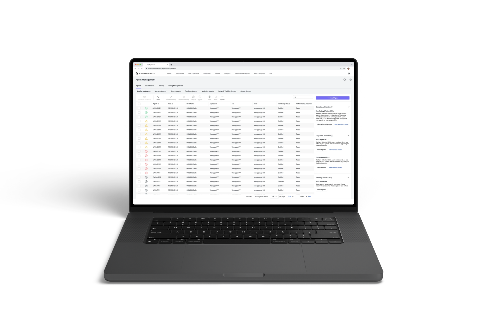
Cisco AppDynamics · 2023
Agent Management
A unified way to install, upgrade and manage agents at enterprise scale.
- Timeline
- 6 months
- Product
- Cisco AppDynamics
- Role
- Senior product designer
At a glance
Install, upgrade and operate agents from one place.
Agent Management brought installation, upgrades, rollbacks and ongoing operations into one workflow around Smart Agent—so ITOps teams could manage thousands of machines without stitching the process together by hand.
I carried the work from ambiguity to an operable system.
Turn scattered operational pain into one lifecycle product model.
Problem framing + product model
Translate discovery research into product priorities and decisions.
Research planning + synthesis
Standardise installation and configuration across agents.
Working sessions with PM · architecture · engineering
Protect the core workflow through release and implementation constraints.
Prioritisation + design-to-engineering delivery
With product management · engineering · architecture · research · field support · design system · UX writing · IX
let’s understand agent managementthrough a city.
01 · City
Applications are like cities.
Services are buildings, dependencies are roads, and requests are the traffic moving between them.
02 · Junction
The useful signal is at the junction.
Many paths meet here. A slowdown at one intersection can ripple through the system.
03 · Camera
Agents are the eyes.
They observe what moves, where it slows, and what needs attention—without becoming the traffic itself.
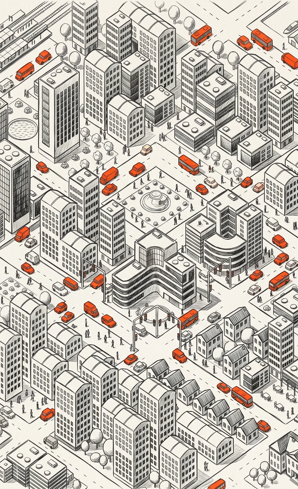
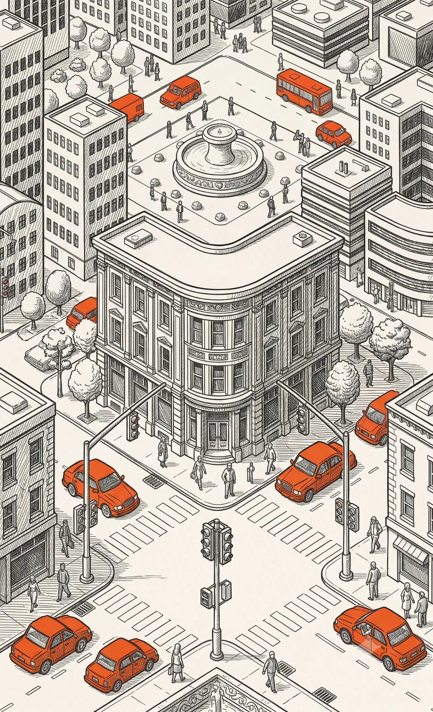
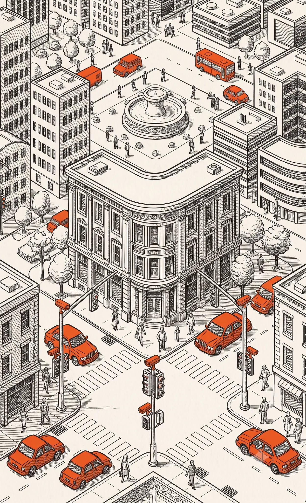
“It takes weeks.”
95,000 agents at enterprise scaleagents at enterprise scale
Installation and upgrades were assembled through scripts, documentation and coordination across teams. At this scale, even a small inconsistency became operational work.
Why it mattered
A security event turned Christmas into an emergency upgrade window.
AppDynamics teams gave up planned holiday time to urgently upgrade agents across customer environments. The emergency exposed the human cost of a fragmented upgrade workflow—not just the technical risk.


Admin Adnan
Responsible for the stability and security of systems—while coordinating changes that can affect thousands of agents.
 Deploy + monitor agentsAcross applications, hosts and teams.
Deploy + monitor agentsAcross applications, hosts and teams. Optimise configurationsWithout breaking working environments.
Optimise configurationsWithout breaking working environments. Set up alertsAct before customers feel impact.
Set up alertsAct before customers feel impact.Discovery research
Across the research, admins lost context as one task moved across tools, owners and configurations.
What the research exposed

The work started before execution.
Admins had to identify the right agents, owners and prerequisites before they could act.

Configuration was a risk decision.
A wrong configuration could disrupt a working application, so confidence and recovery mattered.

One task was split across too many surfaces.
Ansible and host tools worked well, but constant switching split one lifecycle task across many surfaces.
Decision 01

Start with inventory.
Admins needed to know what existed and its state before taking action.
What it took to get an install through.
Identification
- Target applications
- Deployment strategy
- Identify stakeholders
Planning & testing
- Construct and test scripts
- Create and test install steps
- Validate dependencies
Execution
- Schedule a window
- Deploy scripts or install manually
- Verify and restart safely
Measuring cognitive load
The difficult part started before execution.
We expected execution to be the hard part. Research showed the peak came earlier: identifying the right agents, coordinating ownership and permissions, and deciding which configuration was safe enough to apply.
Decision 02
Make the target clear before the action.
Show ownership, status and configuration before asking admins to commit.
The predecessor
ZFI simplified one install.
At fleet scale, admins also needed bulk actions, persistent status and ongoing management.
Learn more about ZFI
ZFI guided installation well, but the workflow fragmented again after setup.

Learning from ZFI
Decision 03
Keep the guidance. Make it work for fleets.
Bulk actions and persistent status extend the guided model.
Focus on the lifecycle moments with the most leverage.
01Discovery

Discovery
Identify environments, dependencies and prerequisites before work begins.
02Installation

Installation
Guide setup and deployment with a clear, repeatable supported path.
03Upgradation

Upgradation
Coordinate version changes across hosts without losing operational context.
04Configuration

Configuration
Manage settings consistently while keeping the system observable and safe.
05Termination

Termination
Retire agents cleanly when applications or environments change.
We prioritised installation, upgradation and configuration: the recurring moments with the most coordination and risk.
See why
These three stages repeated most often and carried the highest cost when the workflow broke.
Technical landscape
from many installs to one orchestrator.
Every agent was installed and managed independently.
Agent-specific setup repeated on every host.
One Smart Agent orchestrates the host.
A shared host-level layer can coordinate agent operations.


Decision 04
Standardise the steps behind each agent.
Smart Agent could orchestrate the differences while the workflow stayed familiar.
Brainstorming
Make the system visible before making it operable.
I used the early model to connect the recurring decisions that had been scattered across installation, inventory, configuration and ongoing operations.


Layout design
Then give repeated actions a stable place to live.
The layout separates global context, selection-dependent actions and detailed configuration without turning each task into a new page.
Low-fidelity validation
14 customers from 6 companies tested the direction.
Easy to use
Features met needs
Install flow, down from 17 min

Preferred direction
Unified dashboard
Preferred by 4 of 6 teams: “more data at a glance.”

Explored
Dynamic view
Grouped by agent type.
What validation changed
We tested the operating model, not just the screens.
Customers wanted to understand agent state and context before choosing an action. That reinforced inventory as the starting point for the product.
Customers were hesitant about agents automatically restarting applications. We added a restart reminder in the panel so the consequence stayed visible and under admin control.
A nested tree stopped working at enterprise scale.
Three of six teams found it hard to use at scale. Adjacent columns kept host, application, tier and node visible.


The final experience
Admin Adnan installs Java agents for newly deployed applications.
Check the fleet before acting.
He checks status, version and environment so he knows which agents need attention.
Group the work.
He selects agents that need the same change and expects one action to apply to the group.
Choose Java, then see what matters.
He expects the flow to surface Java-specific prerequisites without changing the overall pattern.
Confirm where each agent reports.
He maps hosts to applications, tiers and nodes and checks the relationship before continuing.
Set shared configuration once.
He sets common values for the group, then checks the exceptions.
Start the job and move on.
He expects installation to continue in the background and status to remain visible in History.
Confirm the agents are reporting.
He returns to monitoring to verify the newly deployed applications are connected.
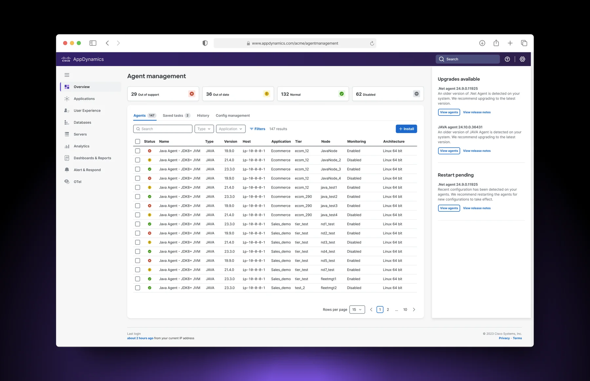
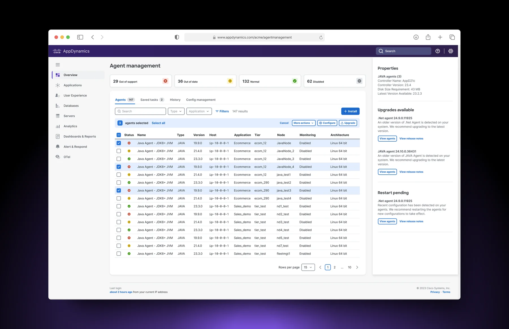
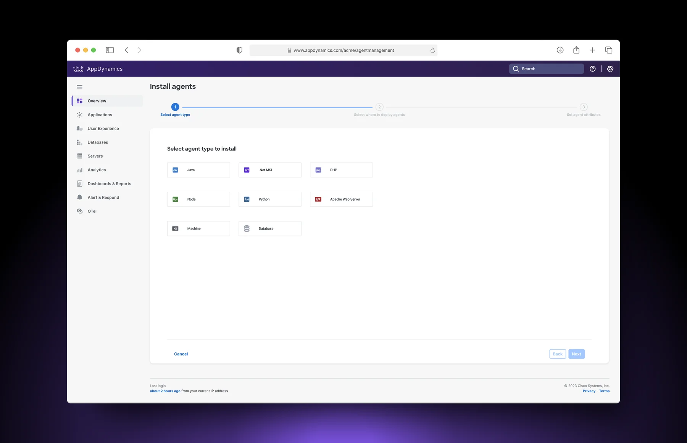
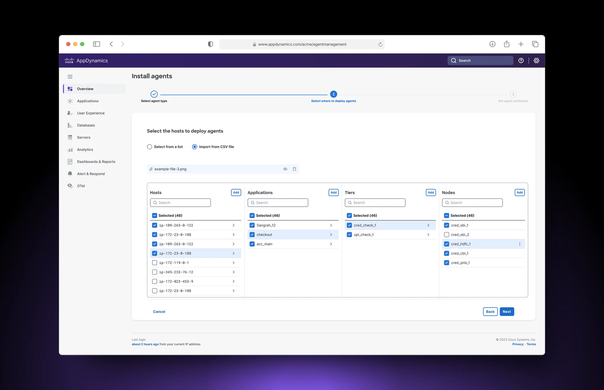
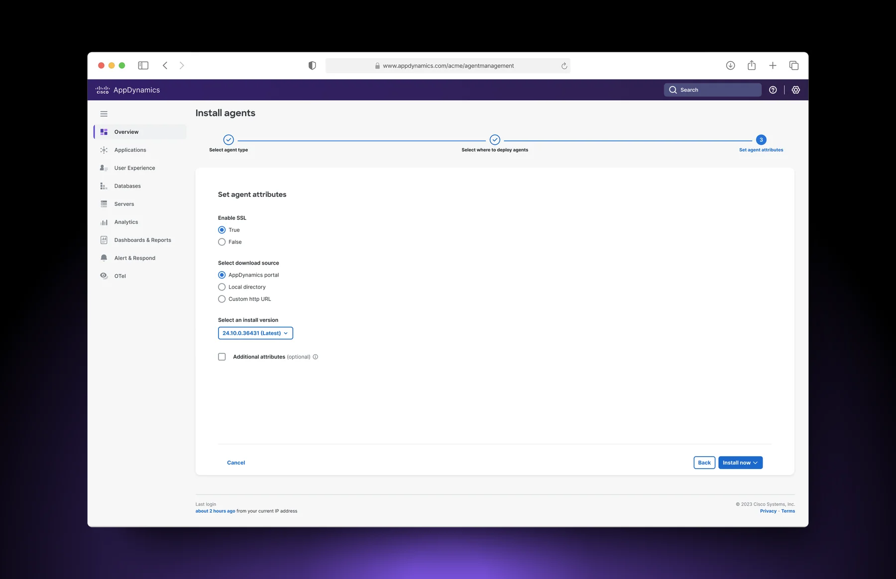
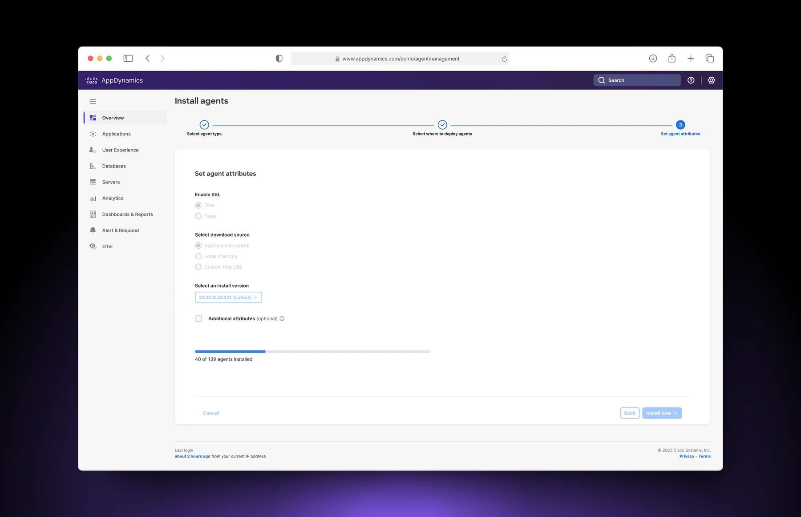
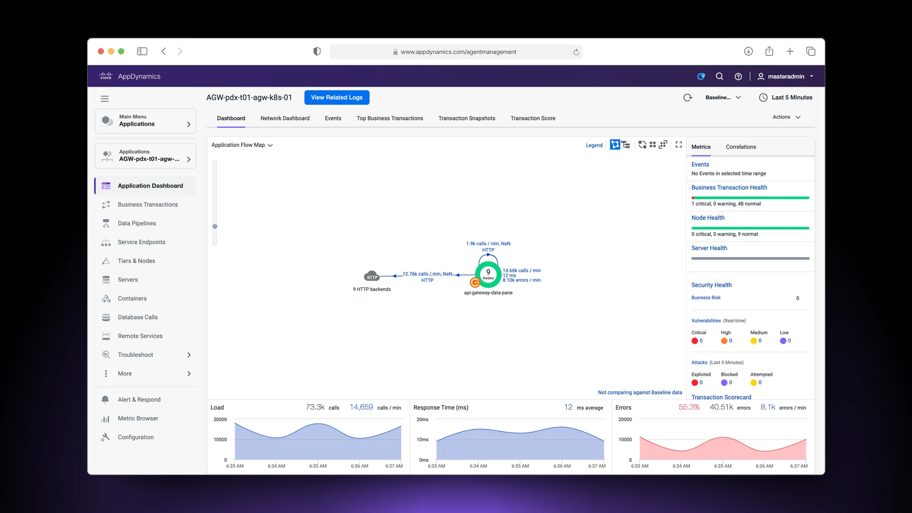
Decision 05
Keep long-running work visible.
Status and recovery stay available after the install panel closes.
The balancing act
A fixed release date forced prioritisation. We kept the end-to-end jobs intact and ranked secondary capabilities with engineering.
Must have
Keep inventory, fleet actions, guided setup and status connected.
Good to have
Rank secondary capabilities by impact and effort.
01Scheduling
 Scheduling
Scheduling02Live logs
 Live logs
Live logs03Sidebar interactions
 Sidebar interactions
Sidebar interactions04In-app view
 In-app view
In-app view
Impact
Adoption across accounts and hosts.*
430+
SaaS customers
Direct adoption of Smart Agents and Agent Management.
680+
SaaS accounts
Using the portal across multiple accounts.
3,000+
SaaS hosts
Powered by Smart Agent within six months.
21.5%
Eligible SaaS accounts
Adopted Agent Management within six months.
* These are direct SaaS adoption metrics. On-premises adoption data is classified and intentionally omitted.
Less time between intent and a working agent.
Customer-reported time to value
2 weeks 2 hours
Reported by a customer for a representative rollout.
Observed guided install
17 min 3 min
Observed benchmark completion time. The shipped workflow reduced the measured installation journey by roughly 5×.
What design influenced
These were the parts of the product model and workflow that design directly shaped.
One workflow
Installation, upgrades, rollbacks and ongoing operations shared one product model.
Fleet operations
Bulk actions and persistent status made the workflow usable across thousands of agents.
Visible state
Inventory, ownership and configuration stayed visible before admins committed changes.
Guided configuration
The guided install model became a repeatable pattern for safer configuration.
Orchestration and execution performance were enabled by the broader product and engineering system.
UX defined the roadmap
The experience became a sequence of product bets—not a one-off screen.
Cisco AppDynamics
Ansible / Chef managementSimplified management UIAuto discovery / auto attach
Cisco Observability Platform
Inventory & actionsProfiles & templatesHost-based machine
A parallel experience for Cisco Observability Platform.
I stayed involved as a parallel Agent Management experience was created for Cisco Observability Platform. The work explored Smart Agent behavior while keeping inventory, installation, configuration and background operations familiar.